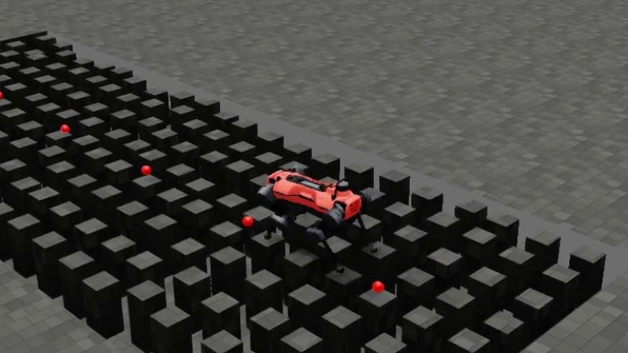
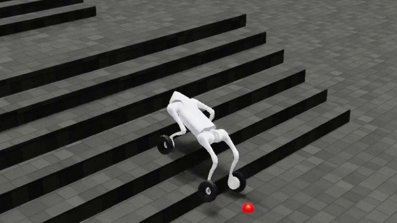
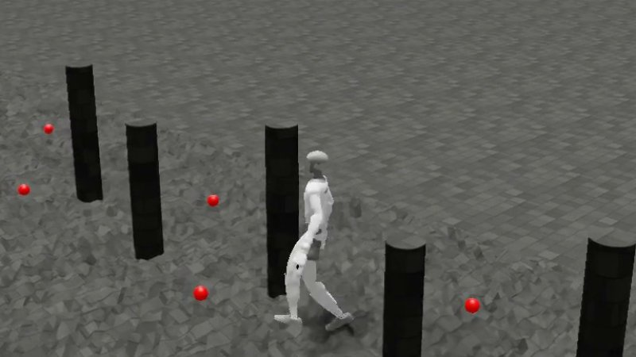

Beyond Acrobotics
Extending generalist parkour to new morphologies and imperfect height maps.
Overview
This was my summer internship in the Articulated Robots Group at the Oxford Robotics Institute, supervised by Ioannis Havoutis. It extends Acrobotics, which trains one generalist parkour policy with minimal compute, and Benjy McCartney's 2025-26 project, which added sparse terrain and ran a policy on a real ANYmal.
I'm asking two questions: does the same pipeline transfer to very different robots, and can it handle the imperfect height maps that real depth cameras produce?
Status: all results below are from simulation, and I'm currently deploying on ANYmal D and G1.

ANYmal D
Fine-tuning for real height maps

Unitree Go2-W
Legs and wheels

Unitree G1
From four legs to two
ANYmal D
A policy trained on a perfect height map failed on the map built from depth cameras, because the camera map partly fills the gaps beside stones. I measured these errors in Gazebo, trained a learned noise model on them, and fine-tuned the policy on that model.
On grid stones with the simulated errors, finishes rose from 3.7 % to 83.6 %. In Gazebo the fine-tuned policy still does much better on a perfect map than on the camera map, so perception is still the main gap. On clean maps it averages 88.0 % finishes across 11 terrains, though mixed columns remain unsolved.
Status: currently deploying on the real robot.
Unitree Go2-W
I moved the same pipeline onto a much smaller quadruped with wheels for feet. The policy controls both the legs and the wheels, and averages 91.1 % finishes across 15 terrains on clean maps, with mixed columns again unsolved.
Status: simulation only so far.
Unitree G1
The third robot swaps four legs for two. The policy controls the humanoid's 12 leg joints and averages 95.1 % finishes across 6 terrains on clean maps. Its weakest terrain is flat ground, at 73.8 %.
Status: currently deploying on the real robot.
Credits
Thanks to Benjy McCartney for the pipeline this builds on, and Vassil Atanassov for robot and deployment support. The Go2-W model comes from robot_lab, and the G1 model from unitree_ros. Finish rates are from Isaac Lab at difficulty 0.7, and the terrain sets differ, so they don't rank the robots.
← All projects